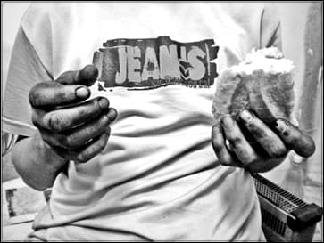

Vorbeam zilele trecute cu un prieten despre optimizarea site-ului nostru și îmi zicea duios despre „target”1 și „strategii” de promovare. Nu știu exact care ar putea fi acest „target”, însă știu că orice Român este, la fel ca și noi, sătul de tot, detot.
Sau poate mă înșel. Pentru că deunăzi, iar s-au scumpit cele necesare pentru a putea fi cât de cât liber. Adică s-au scumpit benzina, motorina și GPL. Vreo reacție? Sigur, același praf în ochi, transportatorii, producătorii, talk-show-urile plictisitoare și obositoare, etc. Rezultatul? Niciunul. Cineva la televizor spunea că la re-voluție2 ne-am câștigat atât „libertatea” cât și responsabilitățile aferente. Deci, vina pentru tot ceea ce se întâmplă în „economia” țării o poartă poporul din lipsa de responsabilitate pentru gestionarea acestei „libertăți”! Sunt profund impresionat de această afirmație și de această lecție de viață. Numai că, să nu uităm, dintre cei ieșiți atunci în stradă, 98% dintre re-voluționari, voiau doar să scape de „tiran” și de „tirană”. Nu întrevedeau niciun program politic, fiind doar masă de manevră pentru legitimarea loviturii de stat. Exact cum spune autorul3 „…apoi veni calmul. / Frontul rage la TV: / „Stop! Nu se mai trage. / Armata-i cu noi, / Cei doi bătrâni morți, / Emblemele jos, / Gata! Suntem democrați, toți!””. Știu că este revoltător să îți spună un „tinerel” care avea 3 ani la „evenimentele din `89” așa ceva. Știu că este dureros să realizezi că ai schimbat un aparat opresiv care lucra „pe față” cu un aparat opresiv care lucrează „pe la spate”, dar așa este! Cum altfel? Consider că trebuie să fim realiști și să analizăm ce s-a schimbat de fapt! Să enumerăm:
- Uniunea (doar că Europeană);
- comisarul (doar că european);
- aceleași hidrocentrale construite până în 1989, cu precizarea că pe unele, cât de curând le vom face cadou;
- aceleași termocentrale construite până în 1989 și aceleași rețele de transport electric;
- aceeași centrală atomică;
- aceleași șosele și autostrăzi în proporție de 99%;
- aceleași spitale construite până în 1989;
- aceleași cămine, complexe studențești și aceleași facultăți de stat;
- același metrou ca și în 1989;
- aceleași linii de tramvai și troleibuz;
- aceleași parcuri, dar distruse, aceleași zone de agrement, dar ruinate, aceleași baze de tratament, dar înstrăinate sau lăsate în paragină, aceleași lacuri termale și băi populare, dar acum cu taxe mult mai mari;
- aceleași mine, dar închise, aceleași sonde petroliere, dar cesionate pe 2 lei, aceleași grădinițe și cămine;
- aceleași stațiuni turistice, dar fie lăsate de izbeliște, fie date cadou;
- aceleași bogății naturale, inepuizabile (aur, neferoase, marmură, minereuri feroase, uraniu, gaz, hidrogen sulfurat…);
- aceleași fântâni, dar secate, aceleași izvoare de apă minerală;
- aceleași centre de cercetare, dar fără cercetători;
- stăm și acum la cozi (sinistru e că acum stăm la „coadă” la bancă, la „coadă” să plătim impozitul sau gazul, la „coadă” să prindem mai știu eu ce promoție sau la „coadă” să depunem cererea de șomaj, etc.);
- la fel ca până-n 1989, „vedem” hoțul dar închidem ochii;
- la fel ca până-n 1989, ne uităm la TV și nu avem ce să vedem;
- la fel ca până-n 1989 ne plângem că-i greu;
- la fel ca până-n 1989 cei fără carte sau cu studii cumpărate, sunt numiți politic în funcții de conducere;
- la fel ca până-n 1989 locurile la facultățile de stat sunt foarte puține;
- la fel ca până-n 1989 încercăm să ne plătim datoriile;
- la fel ca până-n 1989 ne mulțumim doar să spunem bancuri despre politicieni;
- la fel ca până-n 1989 ne lăsăm conduși precum o vită la abator.
- hidrocentralele pe care le avem sunt amortizate contabil. Costul de producție este acum de 10 ori mai mic, iar cel pe care-l plătim de 10 ori mai mare…?!
- termocentralele pe care le avem sunt și ele în aceeași situație ca a hidrocentralelor, în schimb aici ne confruntăm cu alt aspect și anume cu cel al aprovizionării cu cărbune de import. Dacă ar fi fost posibil, cu siguranță politicienii ar fi importat și apa pentru varianta hidro. Amortizarea termocentralelor, duce la costuri foarte mici de producție, în schimb comisioanele de la import au „grijă” să regleze prețul. Aceleași comisioane vin a corecta prețul și în varianta hidro, comisioane de milioane de euro primite pentru „revizii tehnice uzuale la prețuri de milioane”!
- importăm apă grea de la o firma din paradisul fiscal care o cumpără (importă) din… ROMÂNIA! Transportul e foarte rapid, el făcându-se pe hârtie! Teoria că energia electrică este aproape gratuită nu e valabilă și pentru România;
- șoselele și autostrăzile sunt aceleași, dar cu un trafic de 10 ori mai mare;
- în spitale, acum, trebuie să vii cu seringa ta și cu medicamentele tale;
- dacă ceri restul la taxi, spun că nu au schimbat, dacă vrei restul de la Mega Image trebuie să te lupți să-l culegi de pe sticlă… dacă lași ciubuc prea puțin, ți se bate obrazul;
- până-n 1989 eram mințiți 2 ore pe zi la televizor, acum, suntem mințiți de mai multe ori 24 de ore pe zi;
- până-n 1989 președintele era lăudat de Patriarhul României, acum președintele pupă mâna Patriarhului. Homosexualitatea e prezentă la cele mai înalte niveluri… a pupa mâna cuiva, este o opțiune sexuală;
- în ziua de azi, poți face o facultate și numai cu bani. Examenele de semestru sunt teste grilă, iar subiectele sunt postate pe Internet cu 2 săptămâni înainte;
- exploatarea resurselor naturale se face de către privați, care dau statului român, între 3-12% din valoare! Protecția socială are un alt sens… a-l aduce pe om la nivelul de inteligență și/sau cunoaștere/percepere al erbivorelor e factor de echilibru și liniște socială. Eliminarea fizică a pensionarilor și celor asistați social e plus valoare și trebuie făcută într-un cadru legal;
- se fac consolidări la tronsoane de căi de tramvai unde nu e cazul, ci doar pentru a încasa „comisionul”. Toată clasa politică așteaptă cutremurul ca pe Dumnezeu;
- până-n 1989 fiecare cetățean mergea în concediu, o dată la mare și o dată la munte. Azi doar 5% își mai permit;
- apa plată e la fel de scumpă ca berea;
- cola este la același preț cu laptele, dacă nu chiar mai scump. În loc să ne hrănim copiii îi otrăvim;
- doar în România plătești comision de consultare cont, făcută la bancomat;
- doar în România plătești comision când retragi numerar de pe card;
- doar în România termenele de prescripție ale amenzilor nu sunt respectate;
- doar în România au fost date și încă se mai dau legi pentru o zi;
- doar în România brânza e mai scumpă decât carnea;
- doar în România nucile sunt mai scumpe decât nuca de cocos;
- doar în România laptele „dulce” este mai scump decât laptele „bătut”;
- doar în România pixul cu mină este mai ieftin decât mina de pix fără pix;
- doar în România venitul minim și pensiile sunt impozitate (supuse taxării);
- portocalele sunt mai ieftine decât merele;
- cărțile sunt mai ieftine decât revistele;
- constanta frică a pierderii serviciului.
De fapt despre acest lucru este vorba. Despre frică! Despre lipsa de reală atitudine în fața tăvălugului capitalist. Pentru că aici nu putem vorbi despre altă ideologie. Nu putem vorbi despre politici de dreapta sau de stânga (liberalii acum au devenit „de dreapta”. Eminescu – cel ce lupta cu liberalii adică cei „roșii”, adică de stânga, se răsucește în mormânt. Partidul Umanist, doctrină de stânga-ateistă, a devenit Partidul Conservator, doctrină de dreapta-creștină, peste noapte). Este altă momeală aruncată și, din păcate, mușcată de majoritate.
Cei care arată cum stau lucrurile „văd conspirații peste tot” și dacă mai cred și în Dumnezeu sunt fanatici religioși, habotnici, vor să arunce lumea în Evul Mediu „întunecat”. „Uitați-vă ce se întâmplă în lume din cauza lui Osama, care este fanatic religios! A aruncat lumea în terorism.”
Și atunci, educați de televizor (ați uitat ce strigați la „re-voluție”? Să vă aducem aminte: „Ați mințit poporul cu televizorul!”), singura atitudine a „românilor” a devenit scârba. Stau și se uită la ce li se întâmplă și spun cu scârbă, adică atitudine, „Niște hoți dom`le! Atâtea taxe, toți iau șpagă, nimic nu se face, oare cât să mai rezistăm?”. Așa, și? Și ce faceți doamnelor și domnilor? „Păi noi, (bugetarii) suntem afiliați la Sindicatul X și vom ieși în stradă să ne cerem drepturile și să luptăm cu sistemul ticăloșit, cu pensiile nesimțite, cu băieții deștepți cu… ce mai zicea, băi, Băsescu? Aha, da, da cu mogulii!” Admirabil! Bravo! Și s-a rezolvat ceva, vreodată? Spuneți-mi măcar odată când sindicatele au ieșit victorioase de la masa tratativelor? Se pare că este un blestem al românilor ca ceea ce câștigă pe front să piardă la „masa tratativelor”4. Vezi și recenta grevă cu adevărat spontană a celor de la RATB de acum câteva săptămâni! Nu se se mai știe nimic de revendicările lor. S-a uitat! Cât despre cei care lucrează la patron… tăcere, multă tăcere. „Sunt de acord cu voi dar nu pot… știi… mă lasă ăsta fără loc de muncă!”
Să nu credeți că vă spun, eu, ce lucru este bun, dar refuz să cred că domniile voastre nu realizați că ceea ce se întâmplă ACUM în România este un lucru rău!
Să mergem mai departe. Ei, clasa conducătoare, urlă din toți rărunchii că suntem un stat democratic de drept și că fiecare are dreptul la opinie, fie ea bună-rea, căci, nu-i așa, suntem cu toții fiii democrației. Să ne aducem aminte cum, după „evenimentele din `89”, atunci când deja devenisem democrați, avuseseră loc „alegeri libere”, niște tineri studenți nu au fost de acord cu furtul electoral, adică cu Iliescu – „măi, animalule!”. Am spus studenți? Mă iertați, vroiam să spun „fașciști, legionari, golani, elemente diversioniste care vor să fure revoluția românilor”. Și atunci, printr-un aplomb de reală democrație, domnul Miron Cozma, a luat minerii și i-a adus în Piața Universității. „Fașciștii” la aflarea veștii că minerii sunt pe drum, s-au hotărât să-i aștepte și – am râs de m-am tăvălit – îi așteptau la masa discuțiilor pentru a le explica minerilor ce voiau de fapt. Minerii, după cum se știe, au acceptat, doar că au dezmembrat mesele discuțiilor de capul „fașciștilor, legionarilor, golanilor, elementelor diversioniste…”. Iată, dragi cititori, o lecție democratică de impunere a punctului de vedere. Este un real exemplu, deoarece pentru mineriada din `90 a fost condamnat un nimeni. Tovarășul Iliescu – „măi animalule!”, cu zâmbetu-i caracteristic ieșind basma curată; probabil de aceea este și supranumit „bunicuța politicii românești”.

Puțini sunt cei care nu au fost de acord cu protestul Ligii Studenților de atunci. Puțini sunt și acum. Ce este dureros este însă faptul că mult mai puțini fac ceva pentru a continua acea luare de poziție. Nu vreau nici pe departe să îi glorific deoarece din masa aceea de oameni foarte puțini duc idealul mai departe. O idee vine și se duce, dar nu pot crede că aceeași este starea și pentru Ideal, deci cei care au renunțat se pot numi trădători, din acest punct de vedere.
Mulți se plafonează, spunând că nu se mai poate face nimic. Că totul este în zadar. Dar dacă cineva apare și spune lucrurile acestea clar și răspicat, altă plafonare, „hai domnule, să fim realiști, crezi că poți să faci tu ceva… așa de unu` singur?”. Pe la spate imediat mașinăria de zvonuri se pune în mișcare și încep să apară denigrări, exagerări sau mai știu eu ce. Aberant este lucrul că, deși se pare că nimeni nu mai dă crezare știrilor de la TV, în astfel de situații, dacă acel cineva reușește să scoată puțin capul din anonimat, iau ca sursă sigură și infailibilă varianta oficială – cea denigratoare, evident.
Cum mai puteți să credeți tot ce se arată la televizor? Cum este posibil acest lucru? Trebuie conștientizat că toată propaganda mediatică este doar pentru îndobitocire! Ni se arată cum SUA are cea mai puternică armată din lume, dar ei nu au mai câștigat un război de unii singuri de la Declarația de Independență unde dealtfel s-au luptat între ei. Ei, își fac Scut Antirachetă (pentru care amenințare, Iran? Să fim serioși, au ei arme nucleare cum a avut Irakul arme biologice de distrugere în masă5), dar Cuba (defapt un singur om – Fidel Castro) le stă în coastă. Au cele mai avansate tehnologii de locație (s-a făcut acum mai mulți ani o demonstrație că pot vedea din satelit obiecte la fel de mici cât o minge de tenis) și nu îl pot găsi pe acest monstru sacru al terorismului Osama bin (Bin, ben sau Ben, pentru că de fiecare dată este altfel) Ladden.
Am înțeles că, pentru cei de peste 40-45 de ani, lupta pentru idealuri a încetat, că s-au „maturizat”, devenind pur și simplu sclavi ai sistemului bancar și că au lăsat lupta deoparte, dar nu înțeleg de ce „nebunii frumoși” studențimea, intelectualitatea nu luptă. Dacă nu pentru Dumnezeu sau pentru ei, măcar pentru copiii lor sau pentru părinții și bunicii lor să facă acest lucru. Cum puteți să stați pasivi când vedeți ce se întâmplă cu sistemul de învățământ sau cu sistemul sanitar? Cum este posibil să așteptați de la guvernare să rezolve problemele, când ei ne îngroapă în datorii externe, ne jefuiesc pe față, ne pun jugul de gât?
În situația de față propun schimbarea imnului, deoarece „…mai bine morți în luptă, decât să fim iar sclavi în vechiul nost` pământ” nu mai are nicio acoperire.
Asistați la Holocaustul neamului românesc și nu faceți nimic. Trăiți la căldura relativă a speranței că poate nu se vor întâmpla aceste lucruri deși ele chiar se întâmplă. Unde este lupta cea cu nădejdea în Dumnezeu? Pentru ce, la recensământ vă declarați creștini? Vă este frică de ei mai mult decât vă este frică de Dumnezeu! Vă este frică să rămâneți fără „ochiul dracului”! Luați calendarul creștin ortodox, Viețile Sfinților și citiți de ce au devenit mucenici! Nu avem nevoie de lași! Nu avem nevoie de cei care „nu s-au născut în locul potrivit”!
Țin să precizez faptul că nu sunt deloc de acord cu violența. În același timp, sunt obligat să spun că Iliescu – „măi animalule!”, a făcut transferul de putere prin jertfa tinerilor de la re-voluție – căruia de altfel nici nu-i pasă (unde sunt teroriștii care au tras?), cumpărându-și liniștea prin avantaje materiale oferite re-voluționarilor. O imbecilitate sinistră. Pentru ce ați luptat domnilor re-voluționari? Pentru „sfânta libertate” sau pentru o bucată de ciolan de la un bolșevic? Sau ați uitat cine era șeful UTC sau unde și-a terminat „studiile” Iliescu – „măi animalule!”? De asemenea trebuie să precizez că același tovarăș și-a „legitimat” punerea în exercițiul funcțiunii de președinte al României după „alegerile libere” din mai `90, tot printr-o baie de sânge. Unde este domnilor legitimitatea conducerii de după `89? Sau astfel de fapte abominabile l-au legitimat? Nici nu mai spun că a fost președinte mai mult decât a domnit Vlad Țepeș? Mai mult decât a fost președinte „tiranul”, decât a fost Decebal, Mihai Viteazul, etc. Să vedem acum cu ce fapte „mărețe” va rămâne în istorie, în afară de faptul că a fost primul șef de stat care a recunoscut suveranitatea „Republicii” Moldova…
Alt exemplu al „legitimității” prezidențiale și parlamentare sunt recentele alegeri. Spuneți-mi vă rog, dragi analiști (mă iertați pentru limbajul indecent), după care regulă a democrației are parlamentul legitimarea poporului cu drept de vot? Nu cumva mult mai puțin de 50% plus 1 au ieșit să își exercite „dreptul și obligația civică” de a vota? Păi consider că majoritatea a decis! Cancerul trebuie eliminat.
AXA ESTE UN ÎNDEMN LA ATITUDINE
1 Target, eng. țintă.
2 Voluție, ~ii: s.f. Care se referă la schimbare între aceleași lucruri.
3 RAKU – Revoluția neo-capitaliștilor, compilația „Uniți sub tricolor”.
4 Vezi Primul Război Mondial și Al Doilea Război Mondial care sunt cele mai recente exemple.
5 Apropo, cine se face vinovat pentru această dezinformare și invadarea acestei țări, la care România a făcut, în mod, josnic parte?